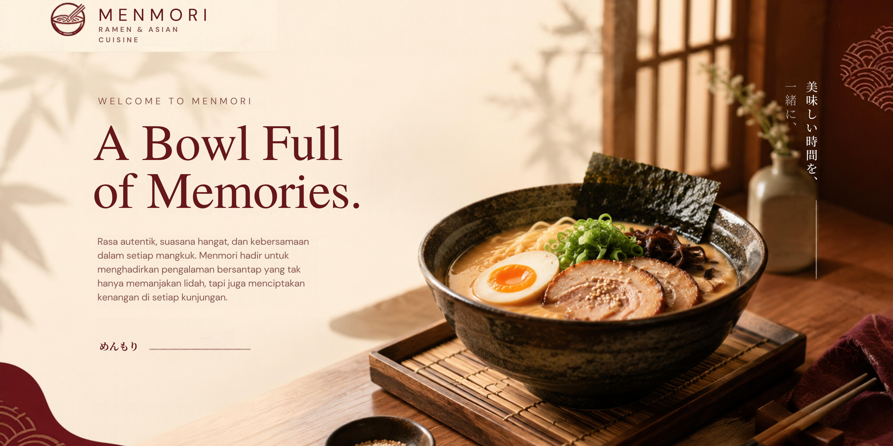
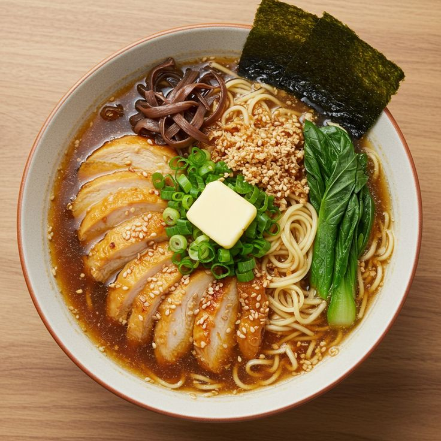
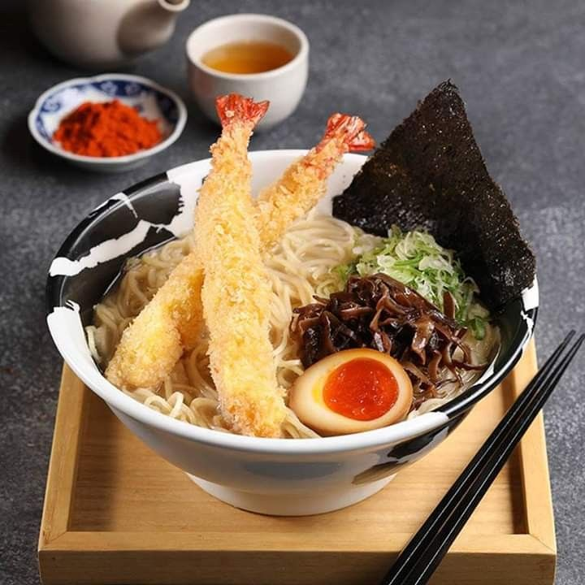
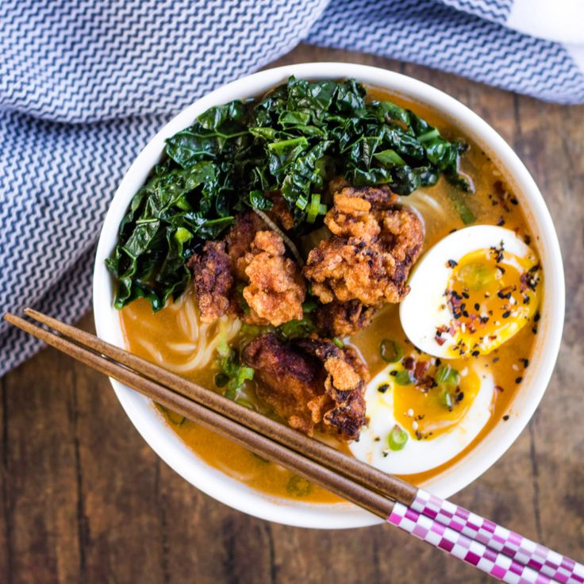
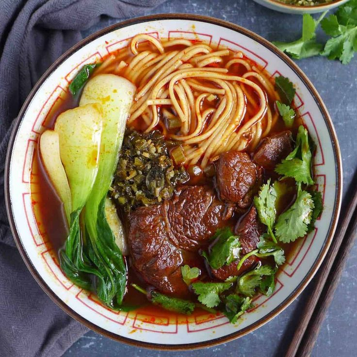
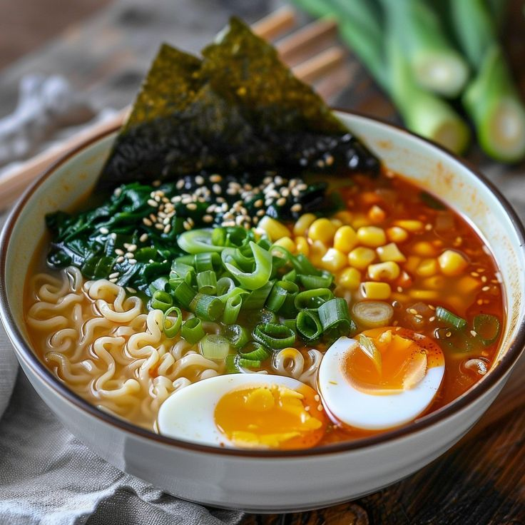
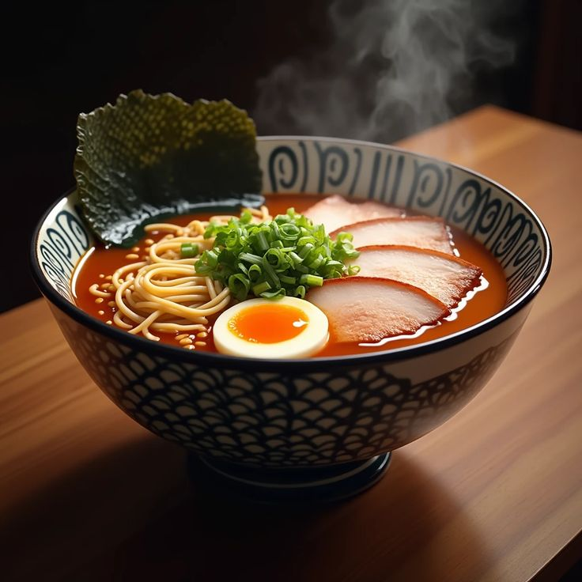

| Home | Galeri | Produk | Kontak |
Where Every Bowl Tells a Story.
|
 Chiken Ramen Matha Rp 37.000 |
 Ebi Tempura Ramen Rp 35.000 |
 chicken miso ramen Rp 37.000 |
|
 Beef ramen Rp 45.000 |
 Salted Egg Ramen Rp 38.000 |
 Legendary Chicken Ramen Rp 37.000 |
A Bowl Full of Memories.
Selamat datang di Menmori, tempat di mana kelezatan, kehangatan, dan kebersamaan bertemu dalam satu mangkuk. Terinspirasi dari kekayaan kuliner Asia, khususnya Jepang dan Korea, Menmori hadir untuk membawa pengalaman bersantap yang tidak hanya memanjakan lidah, tetapi juga menciptakan kenangan di setiap kunjungan.Di Menmori, kami percaya bahwa makanan memiliki cara tersendiri untuk menyatukan orang. Semangkuk ramen hangat di tengah hari yang sibuk, seporsi sushi untuk menemani obrolan bersama sahabat, atau tteokbokki pedas yang dinikmati saat berkumpul dengan keluarga. Setiap hidangan memiliki cerita, dan kami ingin menjadi bagian dari cerita tersebut.
Dengan menghadirkan beragam pilihan menu, mulai dari ramen dengan kuah kaya rasa, sushi, gyoza, tteokbokki, hingga berbagai minuman menyegarkan, Menmori mengajak setiap pengunjung untuk menjelajahi cita rasa Asia dalam suasana yang nyaman dan menyenangkan.
Lebih dari sekadar restoran, Menmori ingin menjadi tempat untuk beristirahat sejenak dari kesibukan, berbagi tawa, menikmati makanan favorit, dan menciptakan momen sederhana yang berkesan.
Karena bagi kami, pengalaman makan terbaik bukan hanya tentang apa yang tersaji di atas meja, melainkan juga tentang siapa yang menemanimu dan kenangan yang kamu bawa pulang.
Menmori — Every Bowl Has a Story, Every Moment Becomes a Memory.| Copyright © 2026 Menmori Resto |